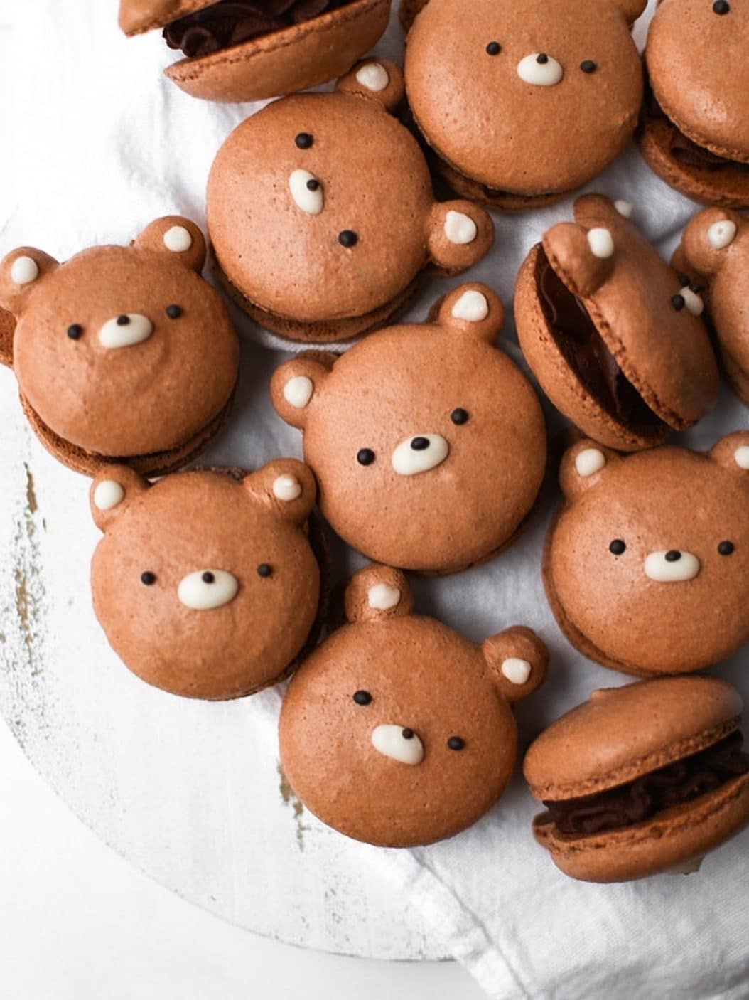

Bear Chocolate Macaron Recipe
Home

Description
Adorable bear-shaped French macarons with cocoa-infused shells, sandwiched together with a rich chocolate ganache. They’re decorated with royal icing.
Ingredients
- 50 g egg whites
- 40 g granulated sugar
- ⅛ tsp cream of tartar
- 60 g almond flour, sifted
- 45 g powdered sugar, sifted
- 5 g cocoa powder, sifted
- brown food coloring
- 50 g milk chocolate
- 50 g heavy cream
- black and white royal icing
Steps
- In a medium bowl, mix the sifted almond flour, powdered sugar, and cocoa powder.
- In a small bowl, combine granulated sugar and cream of tartar
- Pour the egg whites into the bowl of a stand mixer. Set up a stopwatch to time how long to whip the meringue.
0:00 – 4:00 minutes: Mix on medium-low for 4 minutes (Kitchenaid speed 4).
4:00 – 9:30 minutes: Turn the mixer to medium speed (Kitchenaid speed 6). Add a third of the granulated sugar and cream of tartar mixture. After 30 seconds, add another third. After another 30 seconds, add the last of the granulated sugar and cream of tartar mixture.
- Add all of the powdered sugar, almond flour, cocoa, and brown food coloring to the meringue. Gently fold the macaron batter, often scraping the sides and bottom of the bowl.
- With your medium piping bag, pipe round shells onto your silicone mats/parchment paper. Tap the trays against the counter a few times to get rid of air bubbles.
- Preheat the oven to 325F. Place an empty baking sheet upside-down on the middle rack.
- Place the baking sheet with the macarons on top of the upside-down baking sheet. Bake for 15-20 minutes, rotating halfway through.